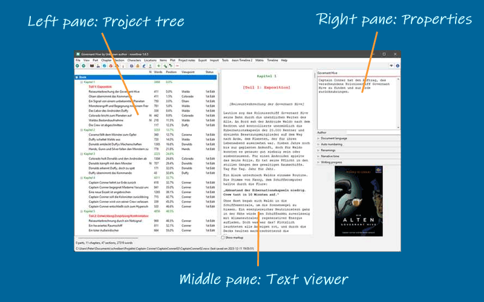
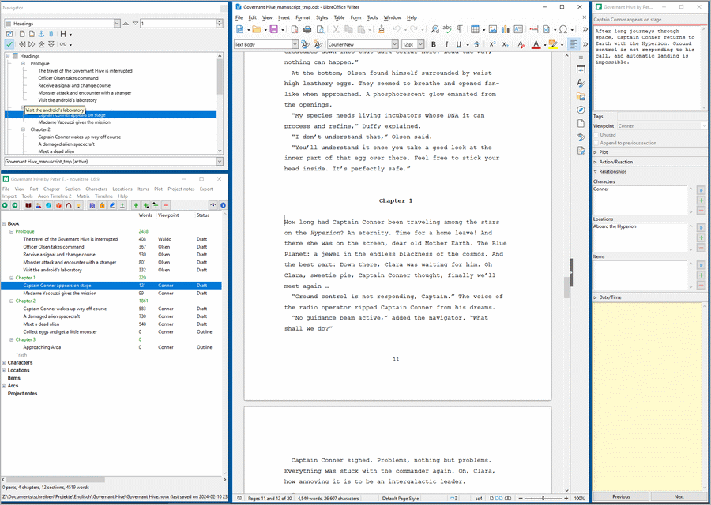

Desktop overview
The novelibre desktop is divided into three panes:

Desktop
Project tree
The project tree in the left pane shows the organization of the project.
The tree elements are color-coded according to the section type (see Basic concepts). Normal type sections are highlighted according to the selected coloring mode (see Optionss in the View menu).
The order of the columns can be changed (see Options in the View menu).
Right-clicking on a tree element opens a context menu with several options.
The type of chapters and sections, as well as the completion status of the sections are color coded and can be changed via context menu.
Project tree structure
The Book branch contains the parts, chapters, and sections that belong to the novel manuscript.
The Characters/Locations/Items branches contain descriptions of the story world’s elements that can be associated with the book’s sections.
The Arcs branch contains the arcs and Turning points.
The Project notes branch contains all project notes.
Project tree operation
- Browsing the tree
novelibre has a browsing history for the selected tree elements.
selects a node back in the tree browsing history.
selects a node forward in the tree browsing history.
Hint
On Windows, the “Forward” and “Back” mouse buttons (if any) may also work.
Move parts, chapters, and sections
Drag and drop while pressing the Alt key.
Caution
Be aware, there is no “Undo” feature.
Delete parts, chapters, and sections
Select item and hit the Del key.
Parts and chapters are deleted.
Sections are marked “unused” and moved to the “Trash” chapter.
Deleting a part has no effect on its subordinate chapters.
Deleting a chapter moves its sections to the “Trash” chapter.
The “Trash” chapter is created automatically, if needed.
When deleting the “Trash” chapter, all its sections are deleted.
Text viewer
The Text viewer in the middle pane shows the part/chapter/section contents with their titles as headings.
You can open or close the Text viewer with View > Toggle Text viewer, or Ctrl-T, or clicking on
 .
.On opening, the windows shows the text, where the tree is selected.
When changing the tree selection, the text moves along.
However, the text can be scrolled independently with the verical scrollbar, or the mousewheel.
You can select text with the mouse, and copy it to the clipboard with Ctrl-C.
You cannot edit the text. For this, you might want to install an editor plugin, such as nv_editor.
Section text is color-coded according to the section type (see Basic concepts).
With the Show markup checkbox, XML markup can be shown/hidden.
Properties
The Properties in the right pane show properties/metadata of the element selected in the project tree.
You can open or close the element properties window with View > Toggle Properties or Ctrl-Alt-T, or clicking on
 .
.On opening, the windows shows the editable properties of the selected element.
You can detach or dock the element properties window with View > Detach/Dock Properties or Ctrl-Alt-D.
On closing the detached window, the properties are docked again.
On large screens, you can arrange novelibre and LibreOffice with detached windows.

Example: Arranging LibreOffice (middle) with detached Navigator (upper left) and novelibre (lower left) with detached Properties (right)